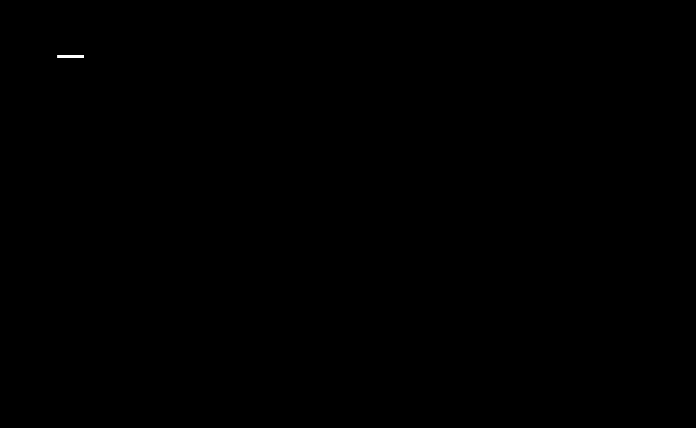
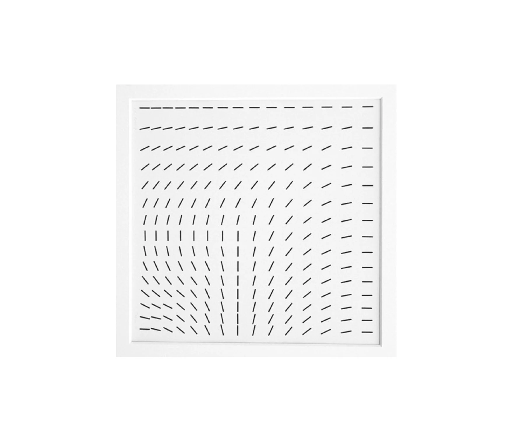
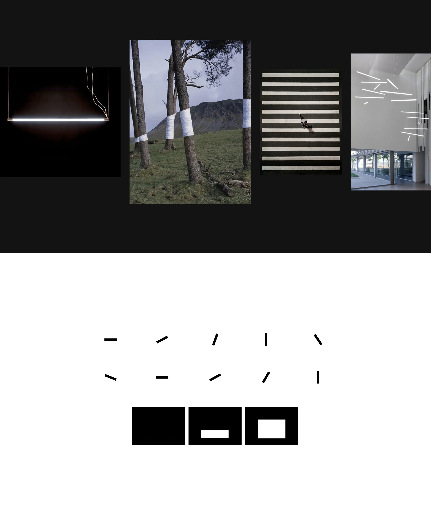
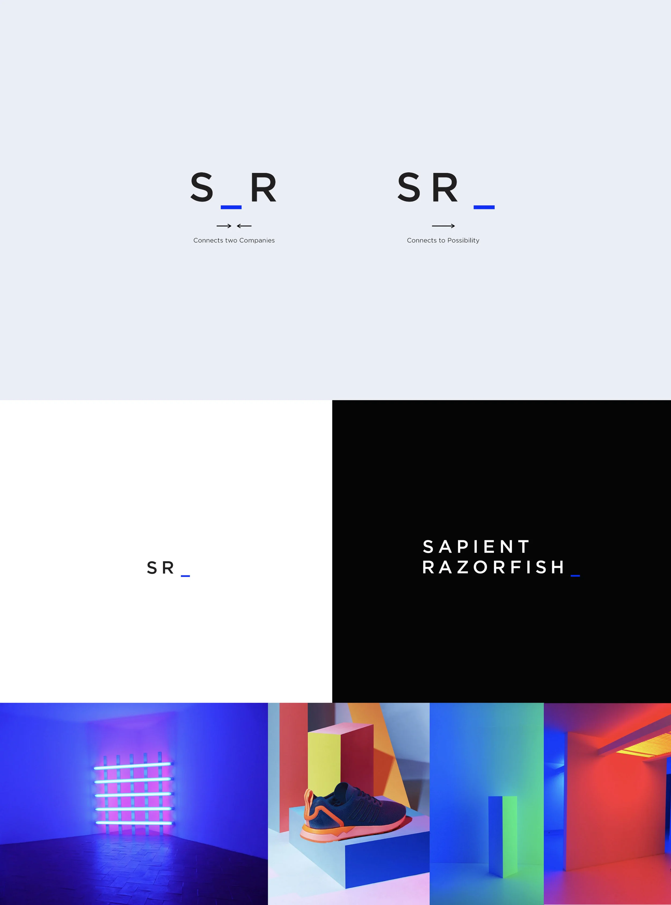
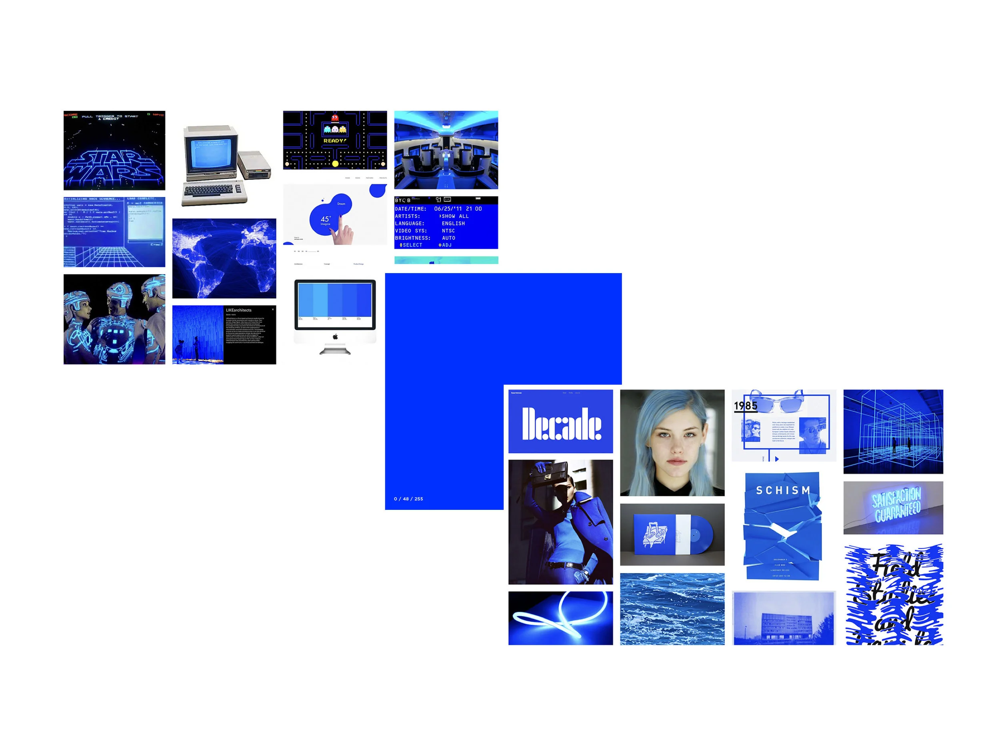
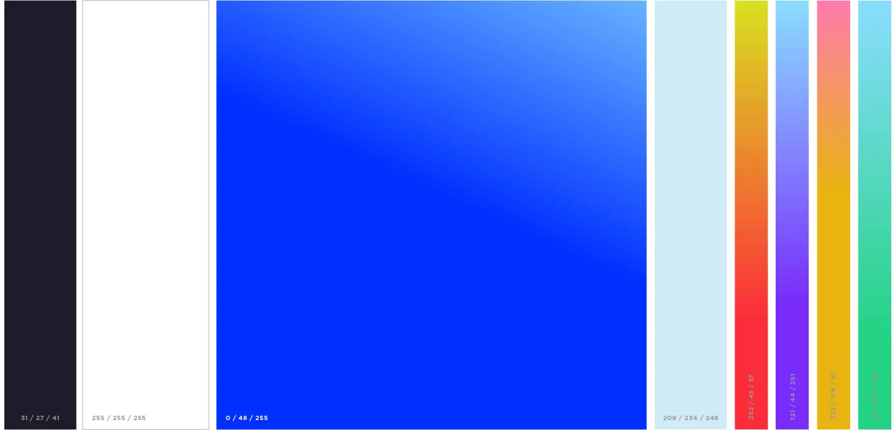
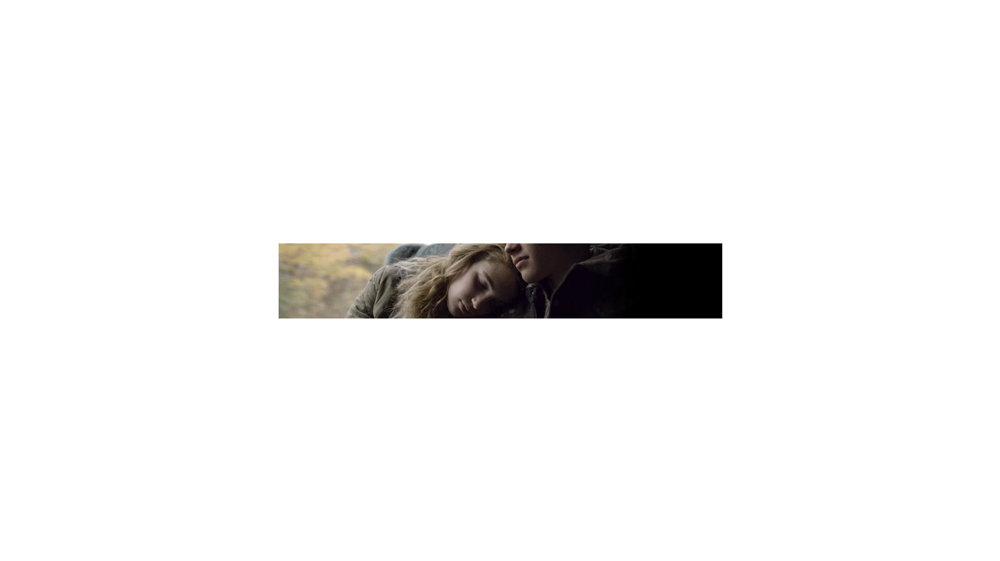
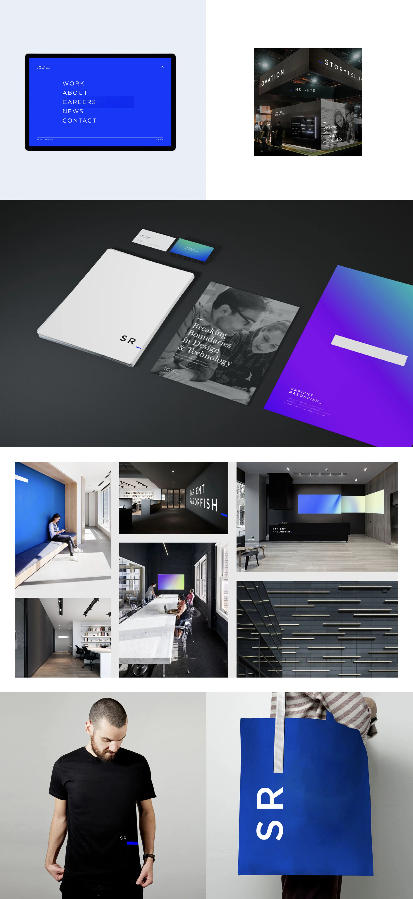
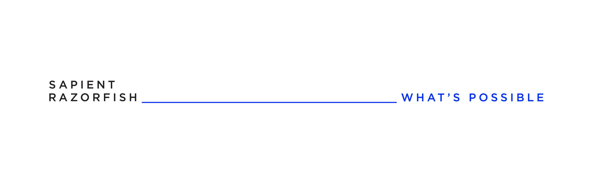

SR_
Branding.
When Sapient and Razorfish merged under Publicis Groupe, the new company needed an identity that didn’t just sum two halves. SR_ represents two entities as one, connecting to the infinite possibilities to come.
Two companies, one identity.
When Sapient and Razorfish merged under Publicis Groupe, a new identity was needed to represent the combined entity. Instead of highlighting the two companies coming together (a common but tired solve), the new identity represents two entities as one, connecting to the infinite possibilities to come.
More important than the logo mark itself, we needed to define what the company stood for.
The mark as punctuation.
The SR_ wordmark treats the brand as a piece of typography rather than a self-contained image. The underscore is the system’s active surface: a connector, a placeholder, a cursor inviting the next thing.




An electric blue, past and future.
The primary brand color is an electric blue that represents the past and future of technology. It’s familiar (probably one of the first colors most of us ever saw on a digital screen), and at the same time it’s the same blue used to signal futuristic, sci-fi technology. The color carries our history and the new doors SapientRazorfish will open at the same time.


An identity in motion.
The underscore wasn’t static; the system was designed with motion in mind, so the mark could live across digital surfaces and feel native to screen rather than transplanted from print.


